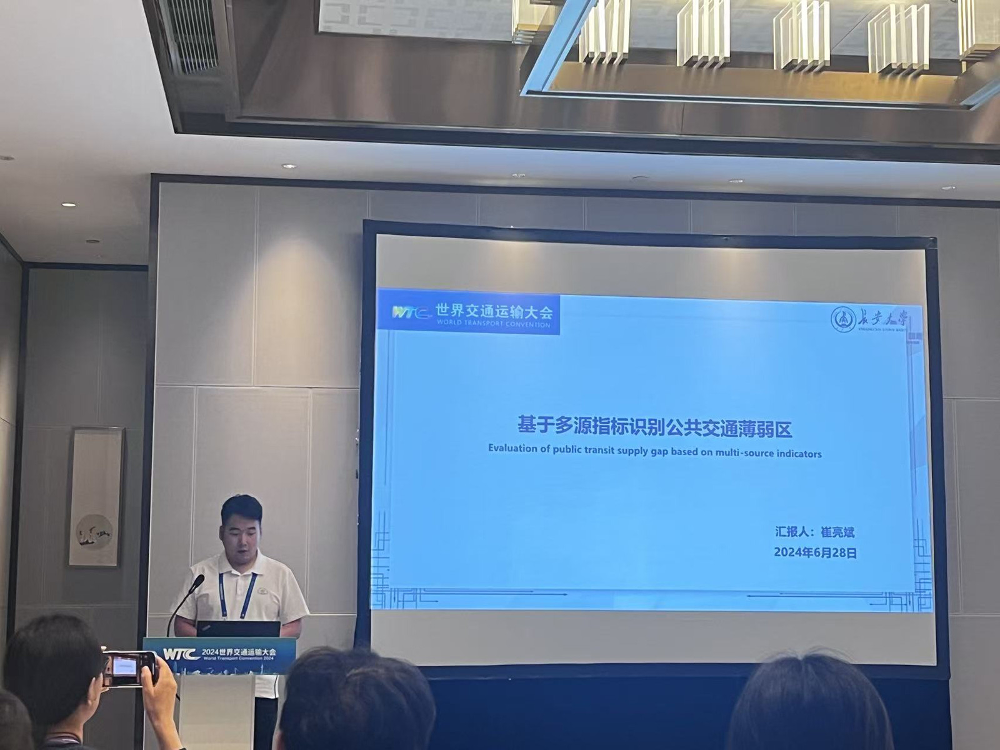
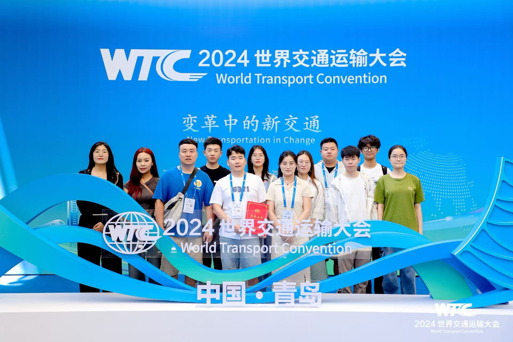
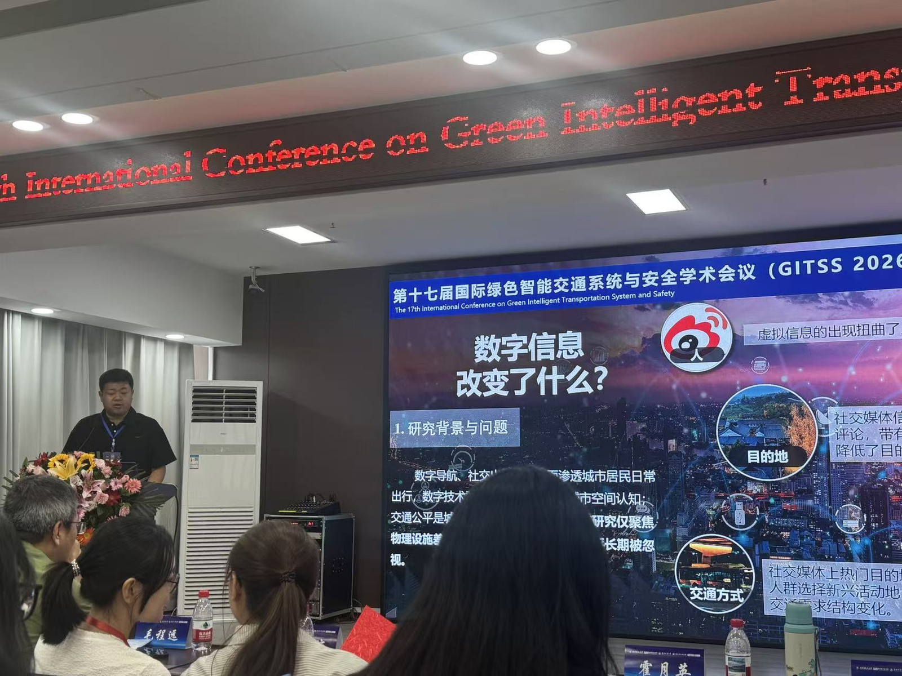
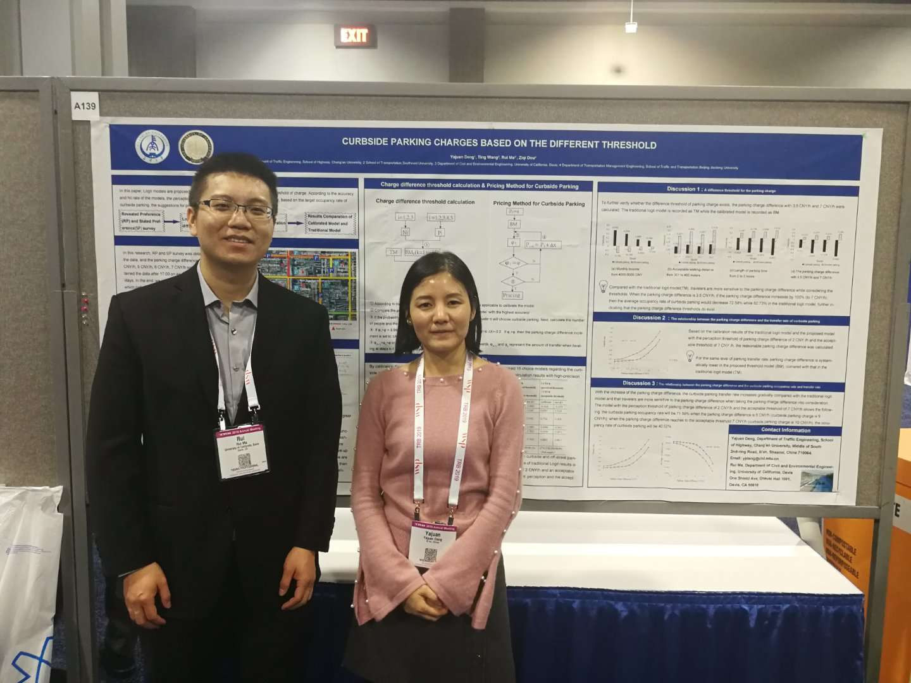
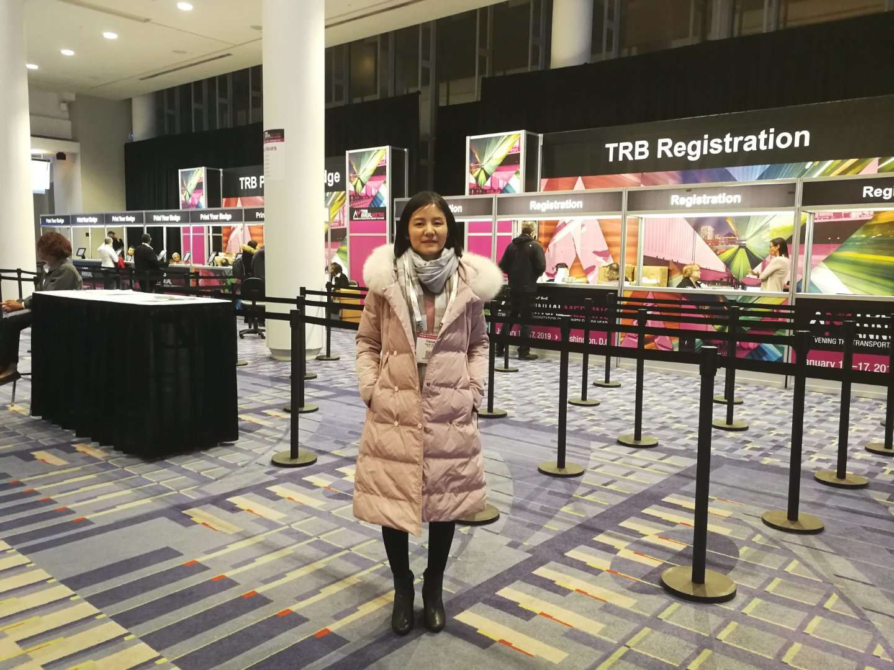

研究报告
公开下载版尚未发布。
乘客有时在网约车与公交、地铁之间作选择，有时也会在一次行程中接续使用两类服务。本项目研究这些出行关系在不同时间和地点如何变化，分析各类关联模式形成和转换的条件。
研究进一步从乘客与交通管理者的角度评估出行成本与效益，探讨如何判断理想的协同运行状态，以及如何通过运行调控改善两类服务的衔接。
JCR 采用 2024 年影响因子的交通相关学科分区，中科院采用 2025 年大类分区。论文年份按正式卷期列示。
教授、博士生导师，同济大学交通运输规划与管理专业博士。主要利用多源数据研究公共交通规划与运营，以及多种出行方式的组合与优化。曾主持城市轨道交通接驳公交线网重构研究。
项目职责主持本项目，统筹网约车与公共交通出行关联模式识别、关联机理分析及协同运行调控研究。

副教授、硕士生导师，博士。研究交通大数据挖掘、居民出行行为及其与城市空间形态的关系。曾主持陕西省自然科学基金项目，利用出租车轨迹识别潜在公交需求，研究公交服务与需求的匹配策略。
项目职责研究网约车与公共交通的出行关联如何随时间和地点变化，分析关联强度发生变化、不同关联模式相互转换的条件。

讲师、硕士生导师，大连理工大学管理科学与工程（交通系统工程）博士。研究交通行为与交通系统优化，曾主持共享自动驾驶出行方式选择及其分担率预测研究。
项目职责从出行者和交通管理者两方面评价成本与效益，研究判定标准，明确在什么条件下网约车与公共交通达到理想的协同运行状态。

讲师、硕士生导师，东南大学交通运输规划与管理博士。研究城市多模式交通系统的建模与协同优化，关注共享出行服务如何根据乘客的出行选择调整运营策略。
项目职责围绕理想协同状态研究网约车与公共交通的运行调控方法，重点关注两种服务的时空衔接、乘客体验和管理政策。
点击照片可查看大图








按正式卷期年份从近到远排列。在线发表早于卷期年份的论文另列在线日期。
| 论文 | 年份 | 链接 |
|---|---|---|
| Deciphering the geometric quantification and mobility patterns of transfers from a spatial cognition perspective: A continuous space analytical framework Yu Li, Yajuan Deng, Hongchang Liu, Ketong Hao, Yichen Liang · Transport Policy · 190, 104511 · 2026-10-23 在线发表
|
2027 | 查看论文 |
| Prioritizing Urban Bus Electrification with Route-Level Energy Profiling: Two-Stage Decision Framework Yajuan Deng, Xiaolu Niu, Wenjian Jia, Yu Li, Ketong Hao, Yu Song · Journal of Transportation Engineering, Part A: Systems · 152(11), 04026120
|
2026 | 查看论文 |
| Analyzing passenger route evenness: distance difference threshold effects and systemic trends Hongchang Liu, Yajuan Deng, Liangbing Cui · Transportation · 53, 5183–5214 · 2025-10-03 在线发表
|
2026 | 查看论文 |
| Unraveling the nuanced relationships between bike-sharing and public transit: A threshold-based classification framework Yajuan Deng, Yu Li, Toshiyuki Yamamoto, Jie Gao, Shuang Liu, Yue Liu, Ketong Hao · Travel Behaviour and Society · 45, 101314
|
2026 | 查看论文 |
| Formation mechanisms of perceived accessibility in the digital era: A multidimensional S-O-R analysis with digital literacy modulation Ketong Hao, Yajuan Deng, Xiaojie Li, Xiaolu Niu, SiLiang Song, Yu Li · Travel Behaviour and Society · 44, 101270
|
2026 | 查看论文 |
| Resilience assessment of interdependent transit networks: an indifference perception threshold-based approach Yichen Liang, Yajuan Deng, Chen Zhang, Ketong Hao, Yujie Guo, Yu Li, Liangbin Cui · Transportation Research Part D: Transport and Environment · 151, 105128 · 2025-11-29 在线发表
|
2026 | 查看论文 |
| Evaluating the role of ride-hailing in multimodal travel to maximize travel utility in urban areas Yu Bai, Yuanqing Wang, Sen Wei, Yajuan Deng · Travel Behaviour and Society · 42, 101150 · 2025-10-10 在线发表
|
2026 | 查看论文 |
| 道路重要度与交通状态耦合协调关系的影响机理研究 邓亚娟、宋思亮、崔亮斌、李雨、牛晓璐、吴琪 · 华南理工大学学报（自然科学版） · 53(11), 62–76
|
2025 | 查看论文 |
| 城市虚实活力空间分异与非线性关系研究 郝可彤、邓亚娟、刘勇、侯凯、鱼甜甜 · 城市发展研究 · 32(9)
|
2025 | 查看题录 |
| Analysis of Supply Gap in Public Transit Considering Differences with Ride-Hailing Liangbin Cui, Yajuan Deng, Shengxuan Ding, Yichen Liang · Transportation Research Record · 2679(6), 838–855
|
2025 | 查看论文 |
| Beyond binary relationship: Multivariant analysis between ride-hailing and public transit based on multi-sourcing data Liangbin Cui, Yajuan Deng, Yu Bai, Qinxin Peng · Travel Behaviour and Society · 38, 100876 · 2024-08-10 在线发表
|
2025 | 查看论文 |
| 共享单车与公共交通多元关系分类及阈值研究 邓亚娟、刘霜、白钰、刘文凤、崔亮斌 · 交通运输系统工程与信息 · 24(2), 208–216
|
2024 | 查看论文 |
| Travel Mode Choice Behavior for High-Speed Railway Stations Based on Multi-Source Data Yajuan Deng, Yu Bai, Liangbin Cui, Renjie He · Transportation Research Record · 2677(8), 525–540
|
2023 | 查看论文 |
标签依据公开的期刊目录。单篇论文的检索记录以数据库查询结果为准。